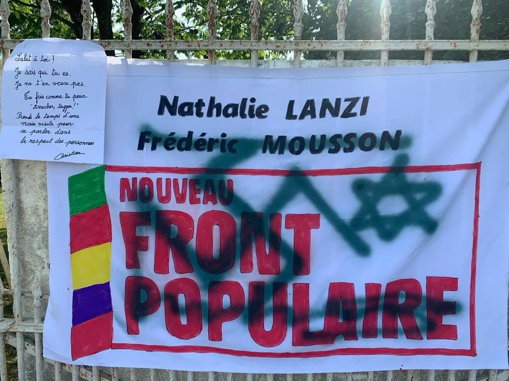

Communiqué de la fédération
Affiche de Nathalie Lanzi et de Frédéric Mousson dégradée. Le communiqué du PCF 79
Date indiquée par Facebook · 28 juin 2024
Repères éditoriaux
Face aux inscriptions antisémites et nazies sur cette affiche, nous avons dénoncé la dégradation et annoncé notre intention de porter plainte. Le communiqué du 28 juin appelait aussi à se rassembler le dimanche 30 juin à 20 h 30 devant la préfecture de Niort.
Texte conservé avec la publication
Depuis toujours, les locaux ou affiches du Parti Communiste Français sont la cible préférée des fascistes lorsque ces mêmes nervis de l'extrême droite ne s'en prennent pas physiquement à nos militants.
Depuis 2022, c'est un redoublement des détériorations et de tags et même d'insultes et de menaces comme par exemple, tout récemment dans les Pyrénées Orientales avec des "Mort aux rouges" ou "Mort aux communistes" inscrits sur les affiches des élections européennes à côté de tags de croix gammées.
Aujourd'hui, notre département n'échappe pas à la montée de la haine qui se développe partout en France avec une extrême droite décomplexée qui se lâche et montre son vrai visage.
Aujourd'hui, notre camarade Frédéric Mousson, suppléant de Nathalie Lanzi aux élections législatives dans la circonscription 1 des Deux-Sèvres au nom du Nouveau Front Populaire, est tout particulièrement visé : une affiche comportant les noms de la candidate titulaire et le sien a été tagué avec une croix gammée dessinée à côté d'une étoile de David et ses nom et prénom ont été barrés.
Notre camarade Frédéric Mousson est également Président de l'association ADIRP, Association des Déportés, Internés, Résistants et Patriotes.
Dès ce vendredi, la Fédération du PCF79 va porter plainte afin qu'une enquête pénale soit déclenchée pour rechercher et poursuivre le ou les coupables de cet acte infâme devant le Tribunal compétent.
Face au climat de haine, de racisme, de xénophobie et d'antisémitisme, le Parti Communiste Français des Deux-Sèvres ne se laissera pas intimider par les fascistes.
En février dernier, Missak Manouchian et son épouse Mélinée sont entrés au Panthéon de la République : ils représentent l'honneur de notre Parti et la reconnaissance de la participation des résistants communistes à la lutte pour la République, la liberté, l'égalité et la fraternité !
Nous vous lançons un appel, habitantes et habitants des Deux-Sèvres à nous témoigner votre solidarité sous toutes les formes qui vous conviendront et à voter massivement les 30 juin et le 7 juillet pour les candidats du Nouveau Front Populaire, seul vrai rempart à l'extrême droite et à la macronie complice de sa montée en force.
Nous appelons d'ores et déjà à un rassemblement dimanche 30 juin à 20h30 devant la Préfecture de Niort.
Nous serons dignes de nos aîné.es, nous ne baisserons pas les yeux et toujours, nous combattrons l'extrême droite et ses théories nauséabondes et dangereuses pour la République.
La Fédération du PCF 79

Sources
Archive rouge · export Facebook · AR-0002-FB-01339
À lire aussi · Tags antisémites. Une déclaration de Fabien Roussel · Le lien d’origine